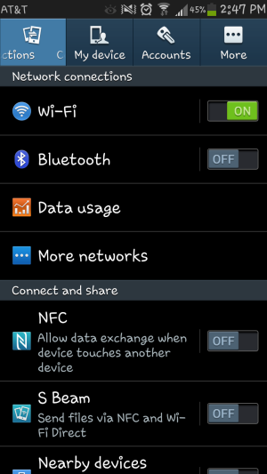
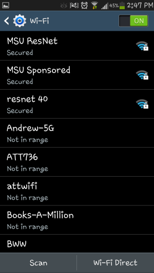
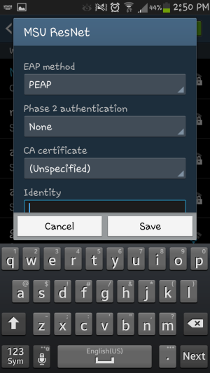
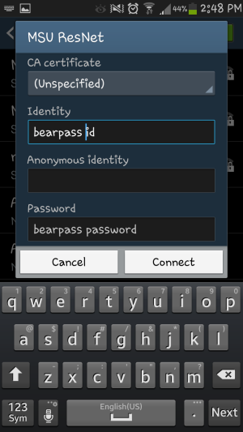

Android Wireless Setup
- Go into your settings and make sure your Wi-Fi is on and tap it 
- Select you network from the list. For students living in the residence halls, this will be "MSU ResNet". For students living off campus, this will be "MSU". 
- The EAP method should be set to PEAP. All other settings can remain as they are. 
- Use the following credentials:
Identity: BearPass Login
Password: Missouri State Password
Tap Connect
